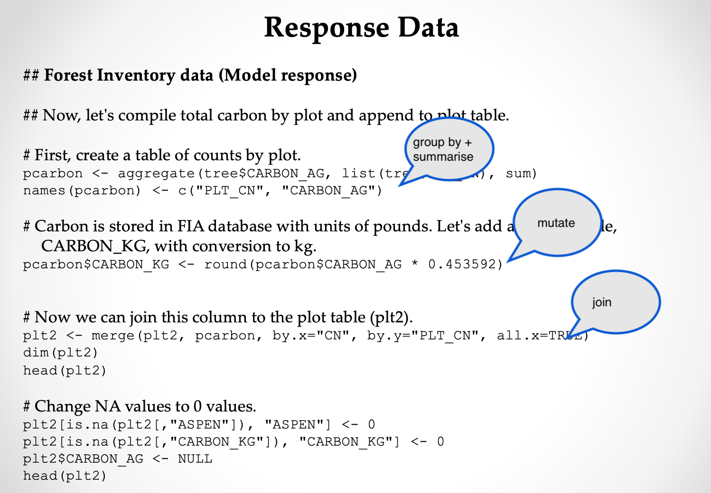

3 Data/Analytic Critique
The use of modelling is increasing as more data is produced and codified into machine-readable forms. From classical statistical models to modern machine learning frameworks, models make inferences about real world processes that rely on implicit and explicit assumptions and decisions. In order to work effectively with the outptus of models we must be able to explore these underlying factors and how they influence what models produce. As machine learning models in particular are encoded into complex data-analytic workflows, we need to develop skills for interrograting and deconstructing models, their paramaters and uncertainties, and their strengths and weaknesses. The next two weeks will focus on developing some skills for working with model output and exploring their fit in the context of R-based data science workflow, however similar tools exist and can be used in other languages and/or modelling environments.
3.1 Spatial modelling example - adapted workshop example
The data for this workshop demo exists as multiple files and folders, so we have zipped them up and posted them to this github repo. Note that we have to use the raw link to get access to the actual data file not the page that shows the file, with that link we can follow the workflow we have used before to download, unzip and remove the zip file. Note that his zip file is large (~17 mb) so we probably only want to download it once.
#download.file("https://github.com/colinr23/gg501/blob/main/data/workshop_data.zip?raw=true",
# destfile = "workshop_data.zip" , mode='wb')
#unzip("workshop_data.zip", exdir = ".")
#file.remove("workshop_data.zip")Read in and examine the data:
library(readr)
library(dplyr)
library(tibble)
options(scipen=6)
plt <- read_csv("workshop_data/SampleData_Basics/plt.csv",
col_types = list(col_character(), col_integer(),
col_integer(), col_integer(), col_integer(), col_double(),
col_double(), col_integer(), col_double(), col_double(),
col_character(), col_integer()))
tree <- read_csv("workshop_data/SampleData_Basics/tree.csv", col_types = list(col_character()))
ref <- read_csv("workshop_data/SampleData_Basics/ref_SPCD.csv")
tree <- left_join(tree, ref, by="SPCD")
spfreq <- tree %>% select(PLT_CN, SPNM) %>% table() %>% as.data.frame.matrix() %>% select(aspen) %>% rownames_to_column("PLT_CN")
#reset any counts greater than 1 to 1 --binary response
spfreq$aspen[spfreq$aspen>0] <- 1
plt2 <- left_join(plt, spfreq, by=c("CN" = "PLT_CN"))Now we have created the plt2 dataset at the plot level which contains plots where aspen is present or absent. We will keep working with the instructions from the workshop slides and modernize some of the workflow:

## Forest Inventory data (Model response)
## Now, let's compile total carbon by plot and append to plot table.
# First, create a table of counts by plot.
plt2 <- tree %>% group_by(PLT_CN) %>%
summarise(CARBON_AG = sum(CARBON_AG)) %>%
mutate(CARBON_KG = round(CARBON_AG * 0.453592)) %>%
right_join(plt2, by = c("PLT_CN" = "CN")) %>%
mutate(CARBON_KG=replace(CARBON_KG, is.na(CARBON_KG), 0)) %>%
mutate(aspen=replace(aspen, is.na(aspen), 0)) %>%
mutate(CARBON_AG = NULL)Now we can carry on with some of the spatial data processing to build the variables for modelling, a very common workflow:
# Load libraries
library(rgdal) # GDAL operations for spatial data
library(raster) # Analyzing gridded spatial data
library(rpart) # Recursive partitioning and regression trees
library(car) # For book (An R Companion to Applied Regression)
library(randomForest) # Generates Random Forest models
library(PresenceAbsence) # Evaluates results of presence-absence models
library(ModelMap) # Generates and applies Random Forest models
# We need to extract data from spatial layers, so let's convert the plot table to a SpatialPoints object in R.
## We know the projection information, so we can add it to the SpatialPoints object.
prj4str <- "+proj=longlat +ellps=GRS80 +datum=NAD83 +no_defs"
ptshp <- SpatialPointsDataFrame(plt[,c("LON","LAT")], plt, proj4string = CRS(prj4str))
## Display the points
plot(ptshp)image
## Predictor variables:
# Landsat Thematic Mapper, band 5 30-m spectral data, band 5, resampled to 90 m
# Landsat Thematic Mapper, NDVI 30-m spectral data, NDVI, resampled to 90 m
# Classified forest/nonforest map 250-m classified MODIS, resampled to 90 m
# Elevation 30-m DEM, resampled to 90 m
# Slope 90-m DEM – derived in a following slides
# Aspect
## Set file names
b5fn <- "workshop_data/SampleData_Spatial/uintaN_TMB5.img" # Landsat TM–Band5
ndvifn <- "workshop_data/SampleData_Spatial/uintaN_TMndvi.img" # Landsat TM–NDVI
fnffn <- "workshop_data/SampleData_Spatial/uintaN_fnfrcl.img" # Forest type map (reclassed)
elevfn <- "workshop_data/SampleData_Spatial/uintaN_elevm.img" # Elevation (meters)
## Reclass raster layer to 2 categories
fnf <- raster("workshop_data/SampleData_Spatial/uintaN_fnf.img")
## Create raster look-up table
fromvect <- c(0,1,2,3)
tovect <- c(2,1,2,2)
rclmat <- matrix(c(fromvect, tovect), 4, 2)
## Generate raster and save to SpatialData folder
fnfrcl <- reclassify(x=fnf, rclmat, datatype='INT2U', filename="workshop_data/SampleData_Spatial/uintaN_fnfrcl.img", overwrite=TRUE)
## Check rasters
rastfnlst <- c(b5fn, ndvifn, fnffn, elevfn)
rastfnlst
sapply(rastfnlst, raster)
## Now, let's generate slope from DEM. Save it to your workshop_data/SampleData_Spatial folder.
help(terrain)
help(writeRaster)
slpfn <- "workshop_data/SampleData_Spatial/uintaN_slp.img"
slope <- terrain(raster(elevfn), opt=c('slope'), unit='degrees', filename=slpfn, datatype='INT1U', overwrite=TRUE)
####************* this may take some time ****************
plot(slope, col=topo.colors(6))image
####************* this may take some time ****************
## Check rasters
rastfnlst <- c(b5fn, ndvifn, fnffn, elevfn, slpfn)
rastfnlst
sapply(rastfnlst, raster)
## We can also generate aspect from DEM. Save it to your workshop_data/SampleData_Spatial folder.
help(terrain)
## This is an intermediate step, so we are not going to save it.
aspectr <- terrain(raster(elevfn), opt=c('aspect'), unit='radians')
aspectr
# Note: Make sure to use radians, not degrees
####************* this may take some time ****************
plot(aspectr, col=terrain.colors(6))image
## Aspect is a circular variable. There are a couple ways to deal with this:
## 1. Convert the values to a categorical variable (ex. North, South, West, East)
## We derived aspect in radians. First convert radians to degrees.
aspectd <- round(aspectr * 180/pi)
aspectd
## Now, create a look-up table of reclass values.
help(reclassify)
frommat <- matrix(c(0,45, 45,135, 135,225, 225,315, 315,361), 5, 2)
frommat
frommat <- matrix(c(0,45, 45,135, 135,225, 225,315, 315,361), 5, 2, byrow=TRUE)
frommat
tovect <- c(1, 2, 3, 4, 1)
rclmat <- cbind(frommat, tovect)
rclmat
## Reclassify raster to new values.
aspcl <- reclassify(x=aspectd, rclmat, include.lowest=TRUE)
aspcl
unique(aspcl)
bks <- c(0,sort(unique(aspcl))) # Break points
cols <- c("dark green", "wheat", "yellow", "blue") # Colors
labs <- c("North", "East", "South", "West") # Labels
lab.pts <- bks[-1]-diff(bks)/2 # Label position
####************* this may take some time ****************
plot(aspcl, col=cols, axis.args=list(at=lab.pts, labels=labs), breaks=bks)images
## 2. Convert to a linear variable (ex. solar radiation index; Roberts and Cooper 1989)
aspval <- (1 + cos(aspectr+30))/2 ## Roberts and Cooper 1989
aspval
plot(aspval)image
## Let's multiply by 100 and round so it will be an integer (less memory)
aspval <- round(aspval * 100)
aspval
plot(aspval)image
# Save this layer to file
aspvalfn <- "workshop_data/SampleData_Spatial/uintaN_aspval.img"
writeRaster(aspval, filename=aspvalfn, datatype='INT1U', overwrite=TRUE)
# Add aspval to rastfnlst
rastfnlst <- c(rastfnlst, aspvalfn)
## Converts aspect into solar radiation equivalents, with a correction of 30 degrees to reflect ## the relative heat of the atmosphere at the time the peak radiation is received.
## Max value is 1.0, occurring at 30 degrees aspect; min value is 0, at 210 degrees aspect.
#Roberts, D.W., and S. V. Cooper. 1989. Concepts and techniques in vegetation mapping. In Land classifications based on vegetation: applications for resource management. D. Ferguson, P. Morgan, and F. D. Johnson, editors. USDA Forest Service General Technical Report INT-257, Ogden, Utah, USA.Predictor Data Extraction
One of the most common uses of GIS and spatial processing functions in r is to build spatial variables which are then used for modelling. Here we have some data at specific coordinates where field plots were located, and we have several raster layers where we have environmental covariates. We want to extract values of raster layers at the locations of the point data.
## We need to check the projections of the rasters. If the projections are different,
## reproject the points to the projection of the rasters, it is much faster.
## We will use the plt2 table with LON/LAT coordinates and the response data attached.
head(plt2)
## We know the LON/LAT coordinates have the following projection:
prj4str <- "+proj=longlat +ellps=GRS80 +datum=NAD83 +no_defs"
# Check projections of each raster..
sapply(rastfnlst, function(x){ projection(raster(x)) })
## Reproject SpatialPoints object to match raster projections.
help(project)
rast.prj <- projection(raster(rastfnlst[1]))
xy <- cbind(plt$LON, plt$LAT)
xyprj <- project(xy, proj=rast.prj)
## Extract values (raster package)
help(extract)
# Let's extract values from 1 layer.
tmp <- extract(raster(elevfn), xyprj)
head(tmp)
# Now, let's create a function to extract, so we can extract from all the rasters at the same time.
extract.fun <- function(rast, xy){ extract(raster(rast), xy) }
# Now, apply this function to the vector list of raster file names.
rastext <- sapply(rastfnlst, extract.fun, xyprj)
# Look at the output and check the class.
head(rastext)
class(rastext)
## Extract values (raster package) cont.. change names
# Let's make the column names shorter.
colnames(rastext)
# Use the rastfnlst vector of file names to get new column names.
# First, get the base name of each raster, without the extension.
cnames <- unlist(strsplit(basename(rastfnlst), ".img"))
cnames
# We could stop here, but let's make the names even shorter and remove
# 'uintaN_' from each name.
cnames2 <- substr(cnames, 8, nchar(cnames))
cnames2
# Now, add names to matrix. Because the output is a matrix, we will use colnames.
colnames(rastext) <- cnames2
head(rastext)
# Now, let's append this matrix to the plot table with the response data (plt2).
head(plt2)
# We just want the response variables, so let's extract these columns along with the unique identifier of the table (CN, aspen, CARBON_KG).
modeldat <- cbind(plt2[,c("PLT_CN", "aspen", "CARBON_KG")], rastext)
head(modeldat)
# Check if this is a data frame
is.data.frame(modeldat)
dim(modeldat)
# Let's also append the projected xy coordinates for overlaying with raster layers.
modeldat <- cbind(xyprj, modeldat)
head(modeldat)
colnames(modeldat)[1:2] <- c("X", "Y")
head(modeldat)Now follow along with the Data Exploration section of the workshop slides. Think about what you would change and what you might leave the same regarding coding style and workflow.
Now we will continue on with the Modelling Generation section of the workshop slides, following the code below.
library(rpart)
## Classification tree
asp.tree <- rpart(aspen ~ TMB5 + TMndvi + fnfrcl + elevm + slp + aspval, data=modeldat, method="class")
plot(asp.tree)
text(asp.tree, cex=0.75)
## Regression tree
carb.tree <- rpart(CARBON_KG ~ TMB5 + TMndvi + fnfrcl + elevm + slp + aspval, data=modeldat)
plot(carb.tree)
text(carb.tree, cex=0.75)
## Now, let's use the randomForests package – Classification tree
library(randomForest)
help(randomForest)
## Let's try with ASPEN binary, categorical response (presence/absence)
set.seed(66)
asp.mod <- randomForest(factor(aspen) ~ TMB5 + TMndvi + fnfrcl + elevm + slp + aspval, data=modeldat, importance = TRUE, na.action = na.exclude)
## Default parameters:
# ntree = 500 # Number of trees
# mtry = sqrt(p) # Number of predictors (p) randomly sampled at each node
# nodesize = 1 # Minimum size of terminal nodes
# replace = TRUE # Bootstrap samples are selected with replacement
## Look at results
asp.mod
summary(asp.mod)
err <- asp.mod$err.rate # Out-Of-Bag (OOB) error rate (of i-th element)
head(err)
tail(err)
mat <- asp.mod$confusion # Confusion matrix
mat
## Classification tree - Output
# Plot the number of trees by the error rate
plot(1:500, err[,"OOB"], xlab="Number of trees", ylab="Error rate")
# Note: how many trees needed to stabilize prediction
## Calculate the percent correctly classified from confusion (error) matrix
mat
pcc <- sum(diag(mat[,1:2]))/sum(mat) * 100
pcc
pcc <- round(pcc, 2) ## Round to nearest 2 decimals
pcc
library(PresenceAbsence)
pcc(mat[,1:2], st.dev=TRUE)
Kappa(mat[,1:2], st.dev=TRUE)
## The Kappa statistic summarizes all the available information in the confusion matrix.
## Kappa measures the proportion of correctly classified units after accounting for the probability of chance agreement.
## Now, let's use the randomForests package – regression tree
## Now, let's try with the continuous, CARBON_KG response
set.seed(66)
carb.mod <- randomForest(CARBON_KG ~ TMB5 + TMndvi + elevm + slp + aspval, data=modeldat, importance = TRUE, na.action=na.exclude)
## Default parameters:
# ntree = 500 # Number of trees
# mtry = p/3 # Number of predictors (p) randomly sampled at each node
# nodesize = 5 # Minimum size of terminal nodes
# replace = TRUE # Bootstrap samples are selected with replacement
## Look at results
carb.mod
summary(carb.mod)
names(carb.mod)
## Regression tree - Output
names(carb.mod)
mse <- carb.mod$mse # Mean square error (of i-th element)
rsq <- carb.mod$rsq # Pseudo R-squared (1-mse/Var(y))(of i-th element)
head(mse)
tail(mse)
tail(rsq)
## Regression tree - Output
# Plot the number of trees by the mse (Mean Square Error)
plot(1:500, mse, xlab="Number of trees", ylab="Mean Square Error rate")
# Note: how many trees needed to stabilize prediction
# Similarly, plot the number of trees by the rsq (R-Squared)
plot(1:500, rsq, xlab="Number of trees", ylab="R-Squared")
# Again: how many trees needed to stabilize prediction
## Variable importance – Classification tree
## Get importance table
asp.imp <- abs(asp.mod$importance)
asp.imp
## Get the number of measures (columns) and number of predictors
ncols <- ncol(asp.imp) ## Number of measures
numpred <- nrow(asp.imp) ## Get number of predictors
## Plot the measures of variable importance for ASPEN presence/absence
par(mfrow=c(2,2))
for(i in 1:ncols){ ## Loop thru the different importance measures
ivect <- sort(asp.imp[,i], dec=TRUE) ## Get 1st measure, descending order
iname <- colnames(asp.imp)[i] ## Get name of measure
# Generate histogram plot (type='h') with no x axis (xaxt='n')
plot(ivect, type = "h", main = paste("Measure", iname), xaxt="n",
xlab = "Predictors", ylab = "", ylim=c(0,max(ivect)))
# Add x axis with associated labels
axis(1, at=1:numpred, lab=names(ivect))
}
## Let’s make a function and plot importance values for CARBON_KG model.
plotimp <- function(itab){
ncols <- ncol(itab) ## Number of measures
numpred <- nrow(itab) ## Get number of predictors
## Plot the measures of variable importance
par(mfrow = c(ncols/2,2))
for(i in 1:ncols){ ## Loop thru the different importance measures
ivect <- sort(itab[,i], dec=TRUE) ## Get 1st measure, sorted decreasing
iname <- colnames(itab)[i] ## Get name of measure
# Generate histogram plot (type='h') with no x axis (xaxt='n')
plot(ivect, type = "h", main = paste("Measure", iname), xaxt="n",
xlab = "Predictors", ylab = "", ylim=c(0,max(ivect)))
# Add x axis with associated labels
axis(1, at=1:numpred, lab=names(ivect)) }
}
## Check function with ASPEN model
plotimp(asp.imp)
## Now, run funtion with CARBON_KG model
plotimp(carb.mod$importance)
## Other information from RandomForest model (proximity=TRUE)
# Measure of internal structure (Proximity measure)
# - The fraction of trees in which each plot falls in the same terminal node.
# - Similarity measure - in theory, similar data points will end up in the same terminal node.
## Let's try adding proximity to CARBON_KG model
set.seed(66)
carb.mod <- randomForest(CARBON_KG ~ TMB5 + TMndvi + elevm + slp + aspval, data=modeldat, importance = TRUE, proximity = TRUE, na.action = na.exclude)
names(carb.mod)
carb.prox <- carb.mod$proximity
#you can now explore carb.proxThe final step in the analysis is to apply the model to the full dataset, in order to map the predicted outcomes.
3.1.1 Resources this week
3.2 Parameterization/Validation I/II
Demo in class